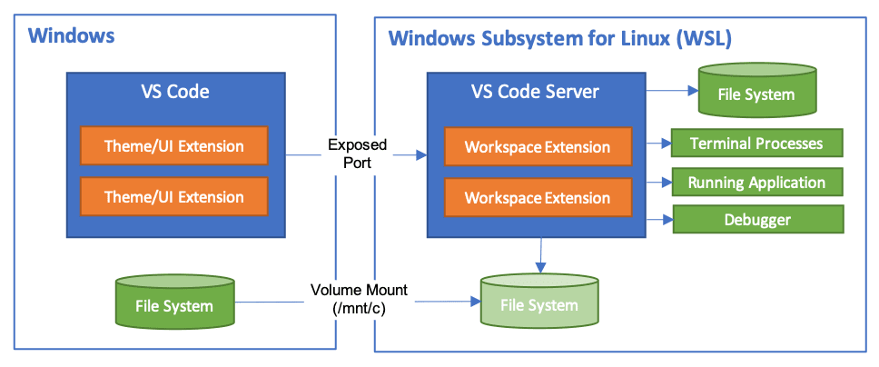
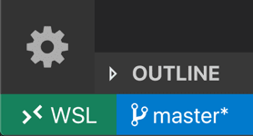
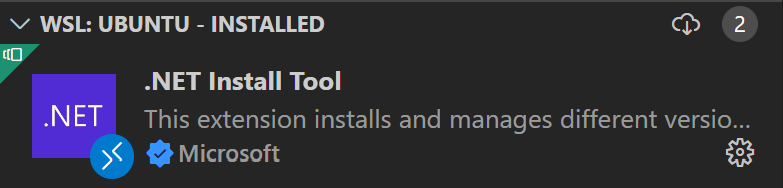
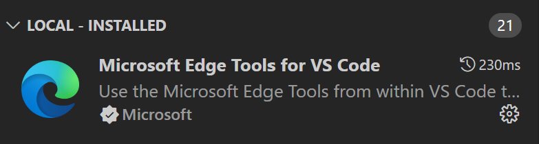
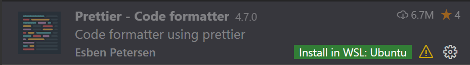
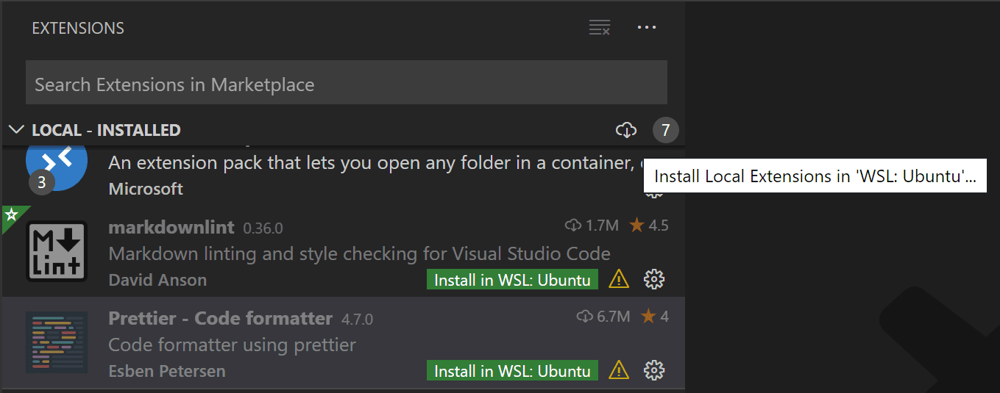
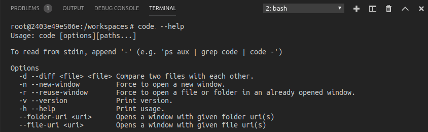
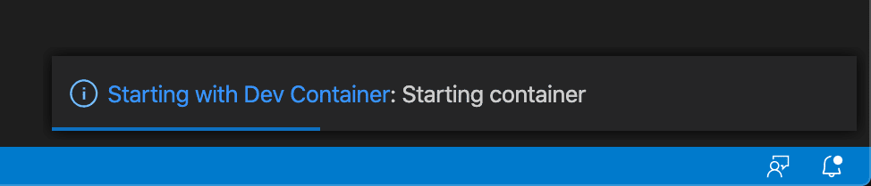

在 WSL 中开发
Visual Studio Code WSL 扩展让你可以将适用于 Linux 的 Windows 子系统 (WSL) 作为全职开发环境，直接在 VS Code 中使用。你可以在基于 Linux 的环境中开发，使用 Linux 专用的工具链和实用程序，并在 Windows 的舒适环境中运行和调试基于 Linux 的应用程序。
该扩展直接在 WSL 中运行命令和其他扩展，因此你可以编辑位于 WSL 或已挂载的 Windows 文件系统（例如 /mnt/c）中的文件，而无需担心路径问题、二进制兼容性或其他跨操作系统挑战。该扩展将在 WSL 内部安装 VS Code Server；该服务器独立于 WSL 中任何已有的 VS Code 安装。

这使得 VS Code 能够提供本地质量的开发体验——包括完整的 IntelliSense（代码补全）、代码导航和调试——无论你的代码托管在何处。
入门
注意：阅读完本主题后，你可以通过入门 WSL 教程 开始使用。
安装
要开始使用，你需要：
- 安装适用于 Linux 的 Windows 子系统以及你偏好的 Linux 发行版。
注意： WSL 1 对于某些类型的开发确实存在一些已知限制。此外，由于扩展内原生源代码中的
glibc依赖项，在 Alpine Linux 中安装的扩展可能无法正常工作。详情请参阅远程开发与 Linux 文章。 - 在 Windows 端（而非 WSL 中）安装 Visual Studio Code。
注意： 在安装过程中提示选择附加任务时，请务必勾选添加到 PATH 选项，以便你可以使用
code命令轻松在 WSL 中打开文件夹。 - 安装 WSL 扩展。如果你计划在 VS Code 中使用其他远程扩展，可以选择安装远程开发扩展包。
打开远程文件夹或工作区
从 WSL 终端
在 VS Code 中打开适用于 Linux 的 Windows 子系统中的文件夹，与从命令提示符或 PowerShell 打开 Windows 文件夹非常相似。
- 打开一个 WSL 终端窗口（使用开始菜单项或在命令提示符 / PowerShell 中键入
wsl）。 - 导航到你想要在 VS Code 中打开的文件夹（包括但不限于 Windows 文件系统挂载点，如
/mnt/c） - 在终端中键入
code .。首次执行此操作时，你应该会看到 VS Code 正在获取在 WSL 中运行所需的组件。这应该只需要很短的时间，而且仅需执行一次。注意： 如果此命令不起作用，你可能需要重新启动终端，或者你可能在安装时未将 VS Code 添加到路径中。
- 片刻之后，一个新的 VS Code 窗口将出现，你将看到一条通知，提示 VS Code 正在 WSL 中打开该文件夹。
VS Code 现在将继续在 WSL 中配置自身，并随着进度向你更新状态。
- 完成后，你现在会在左下角看到一个 WSL 指示器，并且你可以像平常一样使用 VS Code！

就是这样！你在此窗口中执行的任何 VS Code 操作都将在 WSL 环境中执行，从编辑和文件操作，到调试、使用终端等等。
从 VS Code
或者，你可以直接从 VS Code 打开 WSL 窗口：
- 启动 VS Code。
- 按
kbstyle(F1)，选择WSL: Connect to WSL 以使用默认发行版，或选择WSL: Connect to WSL using Distro 以使用特定发行版。 - 使用文件菜单打开你的文件夹。
如果你已经打开了一个文件夹，也可以使用WSL: Reopen Folder in WSL 命令。系统将提示你选择要使用的发行版。
如果你在 WSL 窗口中，并且想要在本地窗口中打开当前输入，请使用WSL: Reopen in Windows。
从 Windows 命令提示符
要从 Windows 提示符直接打开 WSL 窗口，请使用 --remote 命令行参数：
code --remote wsl+<发行版名称>
例如：code --remote wsl+Ubuntu /home/jim/projects/c
我们需要对输入路径是文件还是文件夹进行一些判断。如果它有文件扩展名，则被视为文件。
要强制打开文件夹，请在路径后添加斜杠或使用：
code --folder-uri vscode-remote://wsl+Ubuntu/home/ubuntu/folder.with.dot
要强制打开文件，请添加 --goto 或使用：
code --file-uri vscode-remote://wsl+Ubuntu/home/ubuntu/fileWithoutExtension
使用 Git
如果你在 WSL 和 Windows 中使用相同的仓库，请确保设置一致的行尾。详情请参阅提示和技巧。
你还可以通过配置 WSL 使用 Windows Git 凭据管理器来避免输入密码。详情请参阅提示和技巧。
管理扩展
VS Code 在以下两个位置之一运行扩展：本地在 UI / 客户端侧，或在 WSL 中。虽然影响 VS Code UI 的扩展（如主题和代码片段）是在本地安装的，但大多数扩展将驻留在 WSL 内部。
如果你从扩展视图安装扩展，它将自动安装到正确的位置。安装后，你可以根据类别分组来判断扩展的安装位置。将有一个本地 - 已安装类别和一个用于 WSL 的类别。


注意： 如果你是扩展作者，并且你的扩展无法正常工作或安装到了错误的位置，请参阅支持远程开发以获取详细信息。
实际上需要在远程运行的本地扩展将在本地 - 已安装类别中显示为灰色和禁用状态。选择安装以在远程主机上安装扩展。

你还可以通过转到扩展视图，并使用本地 - 已安装标题栏右侧的云按钮选择在 WSL: {名称} 中安装本地扩展，在 WSL 内部安装所有本地已安装的扩展。这将显示一个下拉菜单，你可以在其中选择要在 WSL 实例中安装哪些本地已安装的扩展。

在 WSL 中打开终端
从 VS Code 在 WSL 中打开终端非常简单。一旦文件夹在 WSL 中打开，你在 VS Code 中打开的任何终端窗口（终端 > 新建终端）都将自动在 WSL 中运行，而不是在本地运行。
你还可以从同一终端窗口使用 code 命令行执行许多操作，例如在 WSL 中打开新文件或文件夹。键入 code --help 以查看命令行中可用的选项。

在 WSL 中调试
一旦你在 WSL 中打开了文件夹，你就可以像在本地运行应用程序一样使用 VS Code 的调试器。例如，如果你在 launch.json 中选择了一个启动配置并开始调试（kb(workbench.action.debug.start)），应用程序将在远程主机上启动，并将调试器附加到其上。
有关在 .vscode/launch.json 中配置 VS Code 调试功能的详细信息，请参阅调试文档。
WSL 特定设置
VS Code 的本地用户设置在你在 WSL 中打开文件夹时也会被重用。虽然这保持了你用户体验的一致性，但你可能希望在本地计算机和 WSL 之间有所不同。幸运的是，一旦你连接到 WSL，你还可以通过从命令面板（kbstyle(F1)）运行首选项: 打开远程设置命令，或在设置编辑器中选择远程选项卡来设置 WSL 特定设置。每当你在 WSL 中打开文件夹时，这些设置将覆盖你已有的任何本地设置。
高级: 环境设置脚本
当 VS Code Remote 在 WSL 中启动时，不会运行任何 shell 启动脚本。这样做是为了避免针对 shell 调优的启动脚本引起的问题。如果你想运行额外的命令或修改环境，可以在设置脚本 ~/.vscode-server/server-env-setup（Insiders 版: ~/.vscode-server-insiders/server-env-setup）中完成。如果存在，该脚本会在服务器启动之前被处理。
该脚本需要是一个有效的 Bourne shell 脚本。请注意，无效的脚本将阻止服务器启动。如果你最终得到了一个阻止服务器启动的脚本，你将必须使用常规的 WSL shell 并删除或重命名该设置脚本。
检查 WSL 日志（WSL: Show Log）以获取输出和错误信息。
高级: 在容器中打开 WSL 2 文件夹
如果你正在使用 WSL 2 和 Docker Desktop 的 WSL 2 后端，你可以使用开发容器扩展来处理存储在 WSL 内部的源代码！只需按照以下步骤操作：
- 如果你尚未安装，请安装和设置 Docker Desktop 的 WSL 2 支持。
提示： 转到设置 > 资源 > WSL 集成，并为你将使用的 WSL 发行版启用 Docker 集成。
- 如果你尚未安装，请安装开发容器扩展以及 WSL 扩展。
- 接下来，像往常一样在 WSL 中打开你的源代码文件夹。
- 一旦你的文件夹在 WSL 中打开，从命令面板（
kbstyle(F1)）中选择开发容器: 在容器中重新打开。 - 如果文件夹中没有
.devcontainer/devcontainer.json文件，你将被要求从可筛选的列表或现有的 Dockerfile 或 Docker Compose 文件（如果存在）中选择一个起点。

- VS Code 窗口（实例）将重新加载并开始构建开发容器。进度通知会提供状态更新。

- 构建完成后，VS Code 将自动连接到容器。你现在可以从容器内部处理你的源代码了。
有关更多信息，请参阅开发容器文档。
已知限制
本节包含 WSL 常见问题的列表。其目的不是提供完整的问题列表，而是突出显示 WSL 中常见的一些问题。
在 WSL 1 中尝试重命名打开的工作区中的文件夹时出现 EACCES: 权限被拒绝错误
这是 WSL 文件系统实现的一个已知问题（Microsoft/WSL#3395, Microsoft/WSL#1956），由 VSCode 活动的文件监视器引起。此问题仅在 WSL 2 中才会被修复。
要避免此问题，请将 remote.WSL.fileWatcher.polling 设置为 true。但是，基于轮询的文件监视对大型工作区有性能影响。
对于大型工作区，你可以增加轮询间隔：remote.WSL.fileWatcher.pollingInterval 并控制被监视的文件夹：setting(files.watcherExclude)。
WSL 2 没有该文件监视器问题，也不受新设置的影响。
WSL 1 中的 Golang
| 问题 | 现有问题 | ||
|---|---|---|---|
| --- | --- | ||
| Delve 调试器在 WSL 下无法工作 | go-delve/delve#810, Microsoft/vscode-go#926 |
WSL 1 中的 Node.js
| 问题 | 现有问题 | ||
|---|---|---|---|
| --- | --- | ||
| NodeJS 错误: spawn EACCES（此错误的不同变体） | Microsoft/WSL#3886 | ||
| Webpack HMR 不工作 | Microsoft/WSL#2709 | ||
| 仅在 WSL 上通过 node 使用 Firebase 异常缓慢 | Microsoft/WSL#2657 |
Git 限制
如果你使用 SSH 克隆 Git 仓库，并且你的 SSH 密钥有密码短语，则 VS Code 的拉取和同步功能在远程运行时可能会挂起。解决方法：使用不带密码短语的 SSH 密钥，使用 HTTPS 克隆，或从命令行运行 git push。
容器工具扩展限制
虽然容器工具扩展可以在远程和本地运行，但如果它已经在本地安装，你将无法在远程 SSH 主机上安装，除非先将其在本地卸载。我们将在未来的 VS Code 版本中解决此问题。
扩展限制
许多扩展在 WSL 中无需修改即可工作。但是，在某些情况下，某些功能可能需要进行更改。如果你遇到扩展问题，请参阅此处以获取常见问题和解决方案的摘要，你可以在报告问题时向扩展作者提及。
此外，在使用基于 Alpine Linux 的发行版时，由于扩展内原生代码中的 glibc 依赖项，某些安装在 WSL 中的扩展可能无法工作。详情请参阅使用 Linux 进行远程开发文章。
常见问题
为什么要求我更改默认发行版？
当使用WSL: Connect to WSL using Distro 并在低于 Windows 10 2019 年 5 月更新（版本 1903）的 WSL 上运行时，你将需要切换默认发行版，因为 WSL 命令只能作用于默认发行版，因为它尚不支持 -d 选项。
你始终可以使用 wslconfig.exe 手动切换默认发行版。
例如：
wslconfig /setdefault Ubuntu你可以使用以下命令查看已安装的发行版：
wslconfig /l我看到关于缺少库或依赖项的错误
某些扩展依赖于某些 WSL Linux 发行版的原始安装中找不到的库。你可以使用其包管理器向 Linux 发行版添加额外的库。对于基于 Ubuntu 和 Debian 的发行版，运行 sudo apt-get install 来安装所需的库。请查看你的扩展文档或所提及的运行时的文档，以获取其他安装详细信息。
WSL 扩展的连接要求是什么？
WSL 扩展和 VS Code Server 需要通过出站 HTTPS（端口 443）连接到：
update.code.visualstudio.comvscode.download.prss.microsoft.commarketplace.visualstudio.com*.gallerycdn.vsassets.io(Azure CDN)
某些扩展（如 C#）会从 download.microsoft.com 或 download.visualstudio.microsoft.com 下载辅助依赖项。其他扩展（如 Visual Studio Live Share）可能还有其他连接要求。如果遇到问题，请查阅扩展的文档以获取详细信息。
服务器和 VS Code 客户端之间的所有其他通信都通过一个随机的本地 TCP 端口完成。你可以在网络连接文章中找到 VS Code 本身需要访问的位置列表。
我在代理后面并遇到连接问题
代理设置可能在 Windows 端或 WSL 端缺失。
当从 VSCode 打开远程窗口时，WSL 扩展会尝试在 Windows 端下载 VSCode 服务器。因此，它使用 Windows 端的代理配置：
- 从操作系统设置继承
- 如 Visual Studio Code 中的网络连接 中所述
当从 WSL 终端启动远程 VSCode 时，下载使用 WSL 发行版中的 wget 完成。代理设置可以在以下位置配置：
一旦服务器启动并运行，将使用远程选项卡上的代理设置。
我可以强制扩展在本地/远程运行吗？
扩展通常被设计和测试为在本地或远程运行，而不是两者兼有。但是，如果扩展支持，你可以在 settings.json 文件中强制它在特定位置运行。
例如，下面的设置将强制容器工具扩展在本地运行，并强制 Remote - SSH: Editing Configuration Files 扩展在远程运行，而非它们的默认设置：
"remote.extensionKind": {
"ms-azuretools.vscode-containers": [ "ui" ],
"ms-vscode-remote.remote-ssh-edit": [ "workspace" ]
}值为 "ui" 而非 "workspace" 将强制扩展在本地 UI/客户端侧运行。通常，这仅应用于测试，除非扩展文档中另有说明，因为它可能会破坏扩展。详情请参阅支持远程开发文章。
作为扩展作者，我需要做什么？
VS Code 扩展 API 抽象了本地/远程的细节，因此大多数扩展无需修改即可工作。然而，由于扩展可以使用任何 node 模块或运行时，在某些情况下可能需要进行调整。我们建议你测试你的扩展，以确保不需要更新。详情请参阅支持远程开发。
问题或反馈
- 参阅提示和技巧或常见问题解答。
- 在 Stack Overflow 上搜索。
- 添加功能请求或报告问题。
- 为我们的文档或 VS Code 本身做出贡献。
- 有关详细信息，请参阅我们的 CONTRIBUTING 指南。